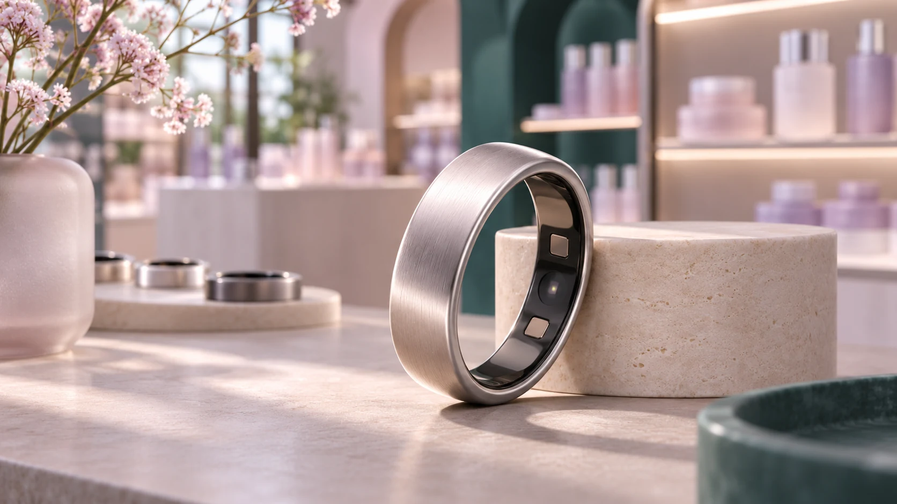

头条零售渠道
Oura Ring 5 走进约 1,000 家美妆门店
Oura 在 11 月 9 日宣布与 Ulta Beauty 合作，线下铺货按计划于 11 月 22 日开始。门店提供试戴和选码，Ulta 官网已经列出在售产品。
为什么值得看 美妆门店给智能戒指带来一批新的消费者，也让他们在下单前就能确认尺寸。

消费健康科技
可穿戴设备从哪里接触用户，谁为它付费？
头条零售渠道
Oura 在 11 月 9 日宣布与 Ulta Beauty 合作，线下铺货按计划于 11 月 22 日开始。门店提供试戴和选码，Ulta 官网已经列出在售产品。
为什么值得看 美妆门店给智能戒指带来一批新的消费者，也让他们在下单前就能确认尺寸。

产品与支付
Noom 计划于 2027 年初向雇主和健康保险计划客户推出 Noom Band，支付方无需为设备额外支付预付款。手环记录的活动、睡眠和心率等数据会接入 Noom 的行为辅导服务。
为什么值得看 Noom 把硬件纳入已有的付费服务。下一步要看，手环能否帮助团队在用户准备退出时及时介入，并提高留存。
健康 AI
苹果在美国启动研究，计划招募最多 20 万名合资格参与者。参与者可以用研究 App 提问，也可以主动共享睡眠、活动、静息心率或化验结果等 HealthKit 数据。项目仍处于研究阶段。
为什么值得看 研究把产品验证拆成具体问题。接入个人数据后，回复是否更贴合用户？用户能否读懂回答与出处？访前准备有没有改善？
资本回看11 月 20 日报道 · 10 月 28 日披露
Crunchbase News 回顾，Camino Partners 向磁吸式鼻扩张器品牌 Intake Breathing 投资 6,200 万美元。公司计划用资金扩充团队、准备供应链，并从线上直销拓展到大众零售。
为什么值得看 这笔投资押的是一个具体的消费模式：可以重复使用的鼻夹、需要补购的贴片，以及把睡眠和呼吸产品带进大众零售渠道的机会。